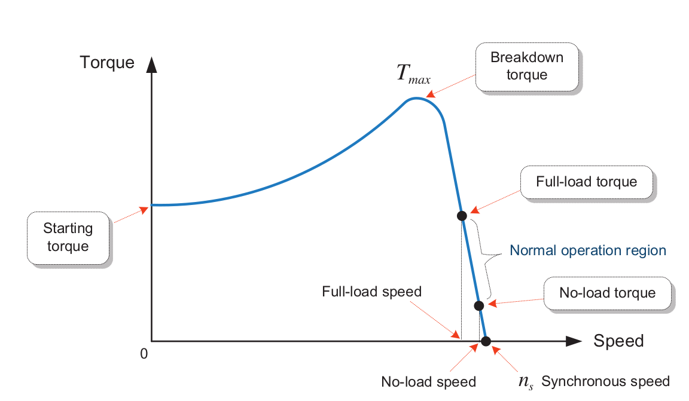

class: center, middle # EE-362 ELECTROMECHANICAL ENERGY CONVERSION-II # Torque in Induction Motors ## Ozan Keysan [keysan.me](http://keysan.me) Office: C-113 <span class="meta">•</span> Tel: 210 7586 --- # Mechanical Power ### Linear Motion ## Power(W) = Force (N) x Speed (m/s) -- ### Rotational Motion -- ## Power(W) = Torque (Nm) x Rotational Speed (rad/s) ## \\(P = T \omega \\) \\( \quad \rightarrow T = \dfrac{P}{\omega} \\) --- ### Can you guess a few applications that require high start-up torque? -- ## Electric Cars: -- [BMW i3](https://www.bmw.com.tr/tr/all-models/bmw-i/i3/2017/bmwi3-genel-bakis.html) <img src="https://cdn.motor1.com/images/mgl/eAoeM/s1/2018-bmw-i3.jpg" alt="Drawing" style="width: 800px;"/> --- ## Start-up Torque <img src="./images/ee362/bmw_i3_specs.png" alt="Drawing" style="width: 800px;"/> ### For curious students: [BMW i3 Specs](http://hybridfordonscentrum.se/wp-content/uploads/2014/05/20140404_BMW.pdf), --- ## Importance of Start-up Torque: [BMW i3 vs WV Golf GTI](https://www.youtube.com/watch?v=jhm3Iv3tAcA) <img src="./images/ee362/bmw_i3_torque.png" alt="Drawing" style="width: 300px;"/> For curious students: [Tesla Induction Motor Info](https://www.technologyreview.com/s/410636/tesla-roadster/), [Reverse engineering a Tesla drivetrain](https://evannex.com/blogs/news/35045701-reverse-engineering-a-tesla-drivetrain), [BMW i3 Specs](http://hybridfordonscentrum.se/wp-content/uploads/2014/05/20140404_BMW.pdf), --- # Torque-Power Relation -- ## \\( P\_{mech} = 3 I\_{2}'^2 \dfrac{(1-s)}{s}r'\_2 \\) -- ## \\( T = \dfrac{P}{\omega} \\) ## What is \\(\omega\\) of the rotor? -- ## \\(\omega_r\\) -- \\(= (1-s)\omega_s\\) --- # Torque-Power Relation ### \\( P\_{mech} = T (1-s) \omega\_s = 3 I\_{2}'^2 \dfrac{(1-s)}{s}r'\_2 \\) -- ### \\( T \omega\_s = 3 I\_{2}'^2 \dfrac{r'\_2}{s} \\) --- # Generated Torque ## \\( T = 3 I\_{2}'^2 \dfrac{r'\_2}{s} \dfrac{1}{\omega_s} \\) -- , which is equal to: ## \\( T = \dfrac{P\_{ag}}{\omega\_s} \quad \\) -- or \\( \quad T = \dfrac{P\_{mech}}{\omega\_r} \\) -- ###\\(\omega_s\\) is the mechanical synchronous speed! \\(\quad \omega_s = \dfrac{2 \pi f_e}{(p/2)}\\) --- # Generated Torque ### \\( T = 3 I\_{2}'^2 \dfrac{r'\_2}{s} \dfrac{1}{\omega_s} \quad \\) We know: -- - ### \\(\omega_s\\), if we know \\(f_e\\) and number of poles -- - ### \\(s\\): if we know rotor speed -- - ### \\(r'\_2\\) from locked-rotor test -- ## How can we calculate \\(I'\_2\\)? --- ## How can we calculate \\(I'\_2\\)? <img src="http://myelectrical.com/Portals/0/SunBlogNuke/2/WindowsLiveWriter/InductionMotorEquivalentCircuit_D7EF/Induction%20Motor%20Equivalent%20Circuit%20-%20Simplified_thumb.png" alt="Drawing" style="width: 400px;"/> -- - ## Inaccurate but easy: Move parallel branch to source side -- - ## More accurate: Calculate Thevenin equivalent as seen from the rotor side --- # Thevenin Equivalent Circuit <img src="https://www.researchgate.net/publication/338011903/figure/fig2/AS:1151985076191266@1651666053906/Equivalent-Thevenin-circuit-of-AC-motor.png" alt="Drawing" style="width: 600px;"/> -- ### \\(V\_{th} = \dfrac{(R\_c // jX\_m)}{R\_1 + jX\_1 + (R\_c // jX\_m)}V\_1\\) -- ### \\(Z\_{th} = (R\_1 + jX\_1) // (R\_c // jX\_m)\\) --- #Torque ### \\(T\_e = \dfrac{3 V\_{th}^2}{(R\_{th}+\dfrac{r'\_2}{s})^2 + (X\_{th}+X'\_2)^2}\dfrac{r'\_2}{s \omega\_s}\\) -- ## If you're in a hurry, move the parallel branch to motor terminals and replace: ### \\(V\_{th} \rightarrow V\_1 \quad R\_{th} \rightarrow R\_1 \quad X\_{th} \rightarrow X\_1\\) --- #Torque ### \\(T\_e = \dfrac{3 V\_{1}^2}{(R\_{1}+\dfrac{r'\_2}{s})^2 + (X\_{1}+X'\_2)^2}\dfrac{r'\_2}{s \omega\_s}\\) ### \\(V\_{th} \rightarrow V\_1 \quad R\_{th} \rightarrow R\_1 \quad X\_{th} \rightarrow X\_1\\) --- # Torque Characteristics ## Can you guess the waveform wrt rotor speed? ### \\(T\_e = \dfrac{3 V\_{th}^2}{(R\_{th}+\dfrac{r'\_2}{s})^2 + (X\_{th}+X'\_2)^2}\dfrac{r'\_2}{s \omega\_s}\\) ## [Torque Graphs](https://docs.google.com/spreadsheets/d/1YVq94hV64z6VSiN8q-v7XydcfLR3xLdcp-5GhdYZg6Y/edit?usp=sharing) --- #Typical Torque Curve of an Induction Motor  <!-- #Typical Current Curve of an Induction Motor <img src="http://www.ibiblio.org/kuphaldt/electricCircuits/AC/02473.png" alt="Drawing" style="width: 800px;"/> --> --- # Torque characteristics ## For small values of slip: -- Torque is proportional to slip -- ## For large values of slip: -- Torque is inversely proportional to slip -- ## Rated slip is usually smaller than 0.05 --- # Start-up Torque ## Substitute s=1 in the torque equation -- ### \\(T\_{start} = \dfrac{3 V\_{th}^2}{(R\_{th}+r'\_2)^2 + (X\_{th}+X'\_2)^2}\dfrac{r'\_2}{\omega\_s}\\) --- ## Round #2 -- ### [Tesla Model S P85D vs Lamborghini LP570-4 Super Trofeo](https://youtu.be/r4CnSS4OG4A?t=34s) <img src="http://www.dsf.my/wp-content/uploads/2014/03/Lamborghini-BlancpainSuper-Trofeo-Race-Series8.jpg" alt="Drawing" style="width: 500px;"/> #### [Tesla P100D vs Lamborghini Hurcan](https://youtu.be/5Rj4Av2ddsY?t=1m3s) #### More info: [Tesla ModelS P100D 0-100 km in 2.4 seconds](http://www.roadandtrack.com/new-cars/videos/a32342/the-tesla-model-s-p100d-ludicrous-plus-can-do-0-60-in-239/), [Tesla Induction Motor Info](https://chargedevs.com/newswire/elon-musk-cooling-not-power-to-weight-ratio-is-the-challenge-with-ac-induction-motors/) --- # Maximum Torque Point <img src="https://engineering.louisville.edu/raise/ECE252/images/L19-18.gif" alt="Drawing" style="width: 400px;"/> ### \\(T\_e = \dfrac{3 V\_{th}^2}{(R\_{th}+\dfrac{r'\_2}{s})^2 + (X\_{th}+X'\_2)^2}\dfrac{r'\_2}{s \omega\_s}\\) --- # Maximum Torque Point <img src="https://www.researchgate.net/publication/338011903/figure/fig2/AS:1151985076191266@1651666053906/Equivalent-Thevenin-circuit-of-AC-motor.png" alt="Drawing" style="width: 500px;"/> ## \\( T\_e = \dfrac{P\_{ag}}{\omega\_s} \quad \\) ### Maximum torque point = Maximum airgap power point --- # Maximum Torque Point <img src="https://www.researchgate.net/publication/338011903/figure/fig2/AS:1151985076191266@1651666053906/Equivalent-Thevenin-circuit-of-AC-motor.png" alt="Drawing" style="width: 500px;"/> ## What is the condition for maximum airgap Power? -- ### Maximum Power Transfer Theorem: \\(\dfrac{r'\_2}{s}= \sqrt{R\_{th}^2+ (X\_{th}+X'\_2)^2}\\) --- ## Slip for maximum torque ### \\(s\_{maxT}= \dfrac{r'\_2}{\sqrt{R\_{th}^2+ (X\_{th}+X'\_2)^2}}\\) -- ## Maximum Torque (substitute s) ### \\(T\_{max} = 3 \dfrac{ 0.5 V\_{th}^2}{\omega\_s}\dfrac{1}{(R\_{th}+\sqrt{R\_{th}^2 + (X\_{th}+X'\_2)^2}}\\) ### Notice that \\(s\_{maxT}\\) depends on \\(r'\_2\\) but \\(T\_{max}\\) doesn't. --- ## You can download this presentation from: [keysan.me/ee362](http://keysan.me/ee362)